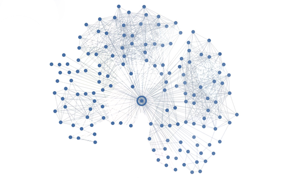

The Internet

The internet today is an indispensable aspect of our lives. It's hard to imagine how life was before it. Today, this engineering marvel
taken for granted and people do not realize the role it plays in making the world a better place. In this page I am going to provide a brief overview of how this phenomenon came to be, beginning with the event that started
it all: the launch of Sputnik.

The US and the former USSR were locked in an arms race. Gaining the upper hand meant the swinging of the balance of power to their favor. Therefore each was trying to outdo the other in terms of technological capability. On 1957, the Soviets launched Sputnik, a small satellite supposedly for weather monitoring purposes.
However, the US was skeptical about this clam. Moreover it showcased the other's ability to launch an Intercontinental Ballistic Missile (ICBM) on the mainland. This rattled the capitalist nation and prompted a rapid increase in the defense budget. One of the agencies established during this time was the Advanced Research Projects Agency (ARPA), commonly known today as DARPA.
ARPANET was established under this agency. It was a network of computers that uses packets--a precursor for today's TCP/IP protocol--as a means of communication. It was primarily used by universities to expedite research and development. Before this, publications must be manually transported over vast distances and proved to be costly. Later on, further development of the system paved the way for email, among others.
Indeed the internet has come a long way since then.